StoreFront 2411 through 3.5 - Basic Configuration
Navigation
This article applies to StoreFront versions 2411, 2402 LTSR, 2203 LTSR, 1912 LTSR, and all other versions 3.5 and newer.
- Change Log
- StoreFront Versions
- StoreFront Installation / Upgrade
- Store Name – Rename
- SSL Certificate
- Base URL – Change
- Default Web Page
- Authentication Configuration
-
Receiver for Web (browser interface)
- Next Generation Experience
- Customize Receiver for Web Appearance
- Receiver for Web Pass-through Authentication
- Workspace app for HTML5
- Deploy Citrix Workspace app for Windows and Mac from StoreFront
- Receiver for Web Timeout
- Favorites, Categories, and Default View - Default to Categories view instead of All
- Beacons
- Propagate Changes
- Export/Import StoreFront Configuration
- Logon Simulator
:idea: = Recently Updated
Change Log
- 2025 April 9 - Deploy Workspace app - updated for Workspace app 2503 for Mac
- 2025 Mar 5 - HTML5 Workspace app - updated with Workspace app for HTML5 version 2502
- 2025 Feb 8 - Updated Versions section for StoreFront 2402 LTSR CU2
- 2025 Jan 16 - Deploy Workspace app - updated for Workspace app 2409.10 for Windows
- 2025 Jan 9 - Updated Versions section for StoreFront 2203 LTSR CU6
- 2024 Dec 4 - Updated Versions and Install sections for StoreFront 2411
- 2024 Jan 24 - Versions - StoreFront security vulnerability
- 2023 Dec 20 - Next Generation Experience in StoreFront 2311
- 2023 Dec 20 - Citrix Workspace web extensions at Citrix Docs
- 2024 April 30 - Updated Versions and Install sections for StoreFront 1912 LTSR CU9
- 2023 June 5 - added link to CTX559036 Storefront 2302 CU2 - All Apps are now showing on initial landing page instead of categories view.
StoreFront Versions
The most recent StoreFront release is version 2411.
- Starting with version 1811, the version numbering changed to a YYMM (year/month) format.
- Versions 2402, 2203, and 1912 are Long Term Service Releases (LTSR).
The default user interface in StoreFront 1811 and newer is now the "purple" interface, which is different from versions 3.16 and older. Be aware of this change before you upgrade StoreFront. Customizations might not work in the new interface. There doesn't appear to be any way to revert to the older user interface. The Next-gen experience in 2311 and newer is not enabled by default but can be enabled manually.

Download one of the following versions of StoreFront. For LTSR versions of Citrix Virtual Apps and Desktops (CVAD), deploy the StoreFront that comes with your version of LSTR CVAD.
- For Current Release, download StoreFront 2411

- For CVAD 2402, download StoreFront 2402 LTSR CU2.
- For CVAD 2203, download StoreFront 2203 LTSR CU6. StoreFront 2203 LTSR CU4 Update 1 and later fix a security vulnerability.
- For CVAD 1912 LTSR, download StoreFront 1912 LTSR CU9 (Cumulative Update 9).
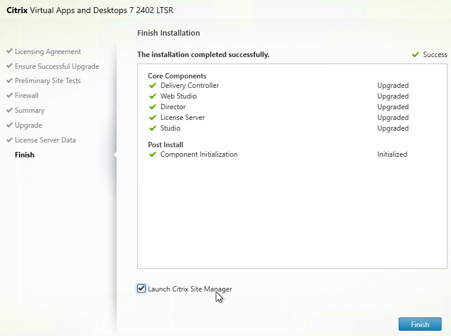


StoreFront Installation / Upgrade
For small environments, it might be OK to install StoreFront on the Delivery Controller machines. But usually StoreFront and Delivery Controllers are separate machines.
- If StoreFront will pull icons from multiple Citrix Virtual Apps and Desktops sites/farms, then StoreFront should be installed on its own machines.
To automate the installation of StoreFront, see Dennis Span Citrix StoreFront unattended installation with PowerShell.
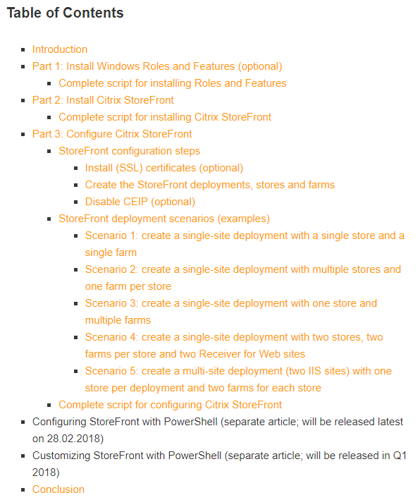
The default user interface in StoreFront 1811 and newer is now the "purple" interface, which is different from versions 3.16 and older. Be aware of this change before you upgrade StoreFront. There doesn't appear to be any way to revert to the older user interface.
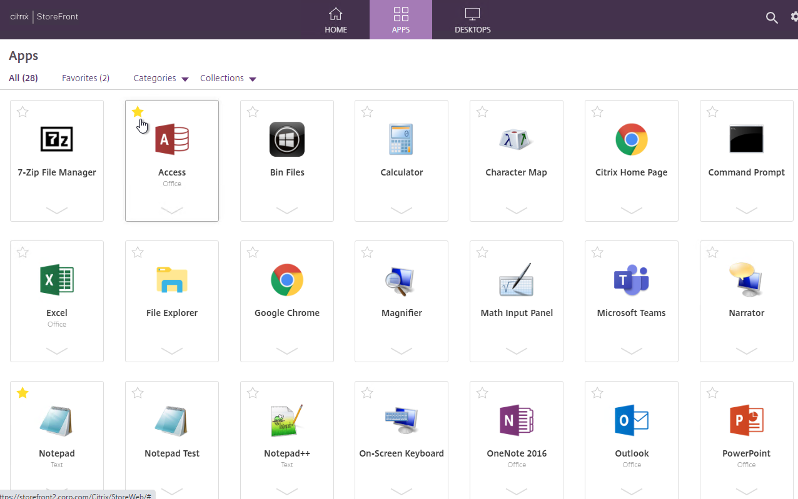
Citrix Blog Post StoreFront 3.0 Scalability recommends StoreFront servers to be sized with 4 vCPU and 8 GB RAM.
-
If upgrading, do the following before beginning the upgrade:
- Other Users - Use Task Manager > Users tab to logoff any other user currently logged into the machine.
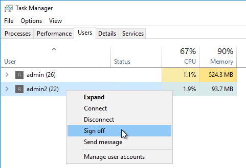
- Export the StoreFront configuration so you can restore it if something goes wrong.
- Stop the World Wide Web Publishing Service.
- Stop all StoreFront services.
- Close all PowerShell and StoreFront consoles.
- Citrix CTX226419 StoreFront upgrade fails to keep the setting in default ICA file. Take a backup of default.ica and usernamepassword.tfrm from C:\inetpub\wwwroot\Citrix\StoreName\App_Data. After upgrading StoreFront, replace the new default.ica and usernamepassword.tfrm with the old default.ica and usernamepassword.tfrm files to ensure you retain the old settings.
- If Microsoft SCOM Agent is installed, then stop the Microsoft Monitoring Agent service.
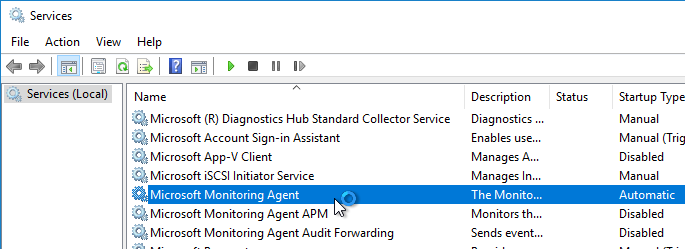
- See Patrick van den Born Avoid 1603 errors when upgrading Citrix StoreFront 2.x to Citrix StoreFront 3.5
-
Operating system support:
-
StoreFront 2407 and newer are not supported on Windows Server 2016.
- StoreFront 2203 and newer are supported on Windows Server 2022.
- StoreFront 2203 is not supported on Windows Server 2012 R2.
- StoreFront 1912 and newer are supported on Windows Server 2019.
- Run CitrixStoreFront-x64.exe from the CVAD ISO at /x64/StoreFront. Or download it separately.

- Click Yes if asked to install .NET Runtime Version 8.

- Click Install.

- Click Close.

- In the License Agreement page, check the box next to I accept the terms, and click Next.

- In the Review prerequisites page, click Next.
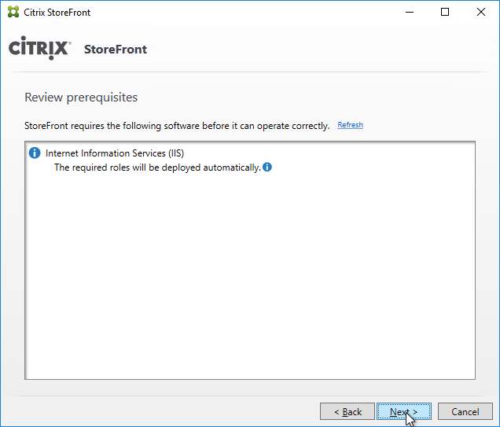
- In the Ready to install page, click Install.

- In the Successfully installed StoreFront page, click Finish.

- Click Yes if prompted to reboot.
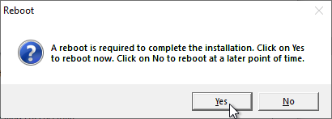
- FAS - If you upgraded a StoreFront server that was connected to Citrix Federated Authentication Service (FAS), then also upgrade Citrix Federated Authentication Service.

- Other Users - Use Task Manager > Users tab to logoff any other user currently logged into the machine.
If this is a new install, skip to the Initial Configuration.
If you are upgrading from StoreFront 3.8 or older, then do the following to add SAML Authentication as an option. This feature lets you perform SAML against StoreFront without needing Citrix Gateway. If you did a fresh deployment of 3.9 or newer, then SAML is already added.
- Right-click your Store and click Manage Authentication Methods.
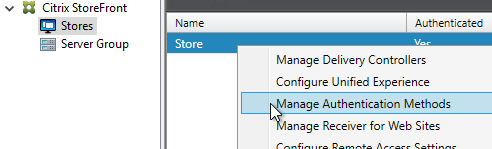
- On the bottom, click the Advanced button, and click Install or uninstall authentication methods.
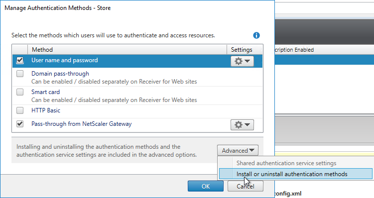
- Check the box next to SAML Authentication, and click OK.
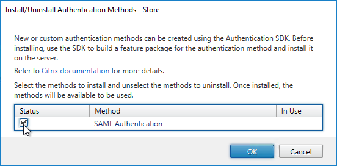
- If you don't want to configure SAML at this time, then uncheck the authentication method. See the Federated Authentication Service article for SAML details.
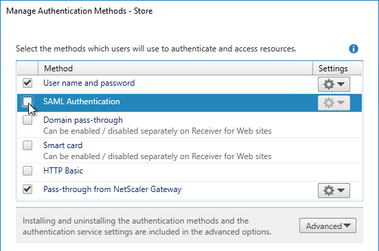
Initial Configuration
In StoreFront 3.8 and newer, you can create multiple stores in different IIS websites. This functionality is not exposed in the GUI and instead the entire StoreFront configuration must be performed using PowerShell. See Citrix Blog Post StoreFront 3.8 is Available NOW! for sample PowerShell commands to create the stores.
You can also use PowerShell to create a store and configure it as detailed at CTX206009 How to configure a Store via Powershell.
If this is a new deployment of StoreFront, do the following to perform the initial configuration:
- In PowerShell, run Set-ExecutionPolicy RemoteSigned.
- The management console should launch automatically. If not, launch Citrix StoreFront from the Start Menu.
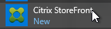
- In the middle, click Create a new deployment.
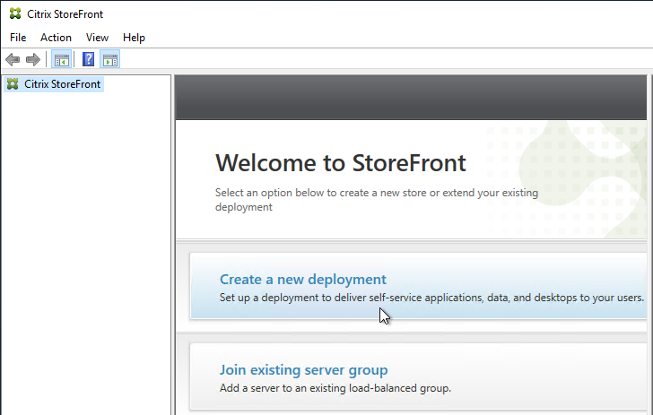
- In the Base URL page, if you installed an SSL certificate on the StoreFront server, then the Hostname should already be filled in. For now, you can leave it set to the server's name and then change it later once you set up SSL and load balancing. Click Next.
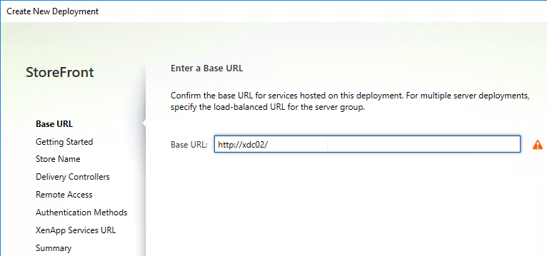
- In the Getting Started page, click Next.
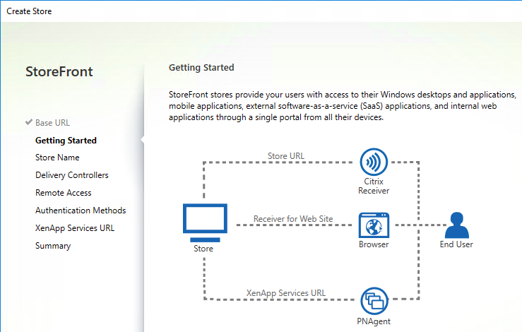
- In the Store Name page, enter a name for the store. The name entered here is part of the URL path (e.g. /Citrix/CorpStoreWeb)
- Check the box next to Set this Receiver for Web site as IIS default and click Next.
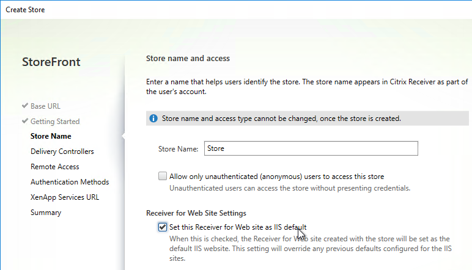
- In the Delivery Controllers page, click Add.
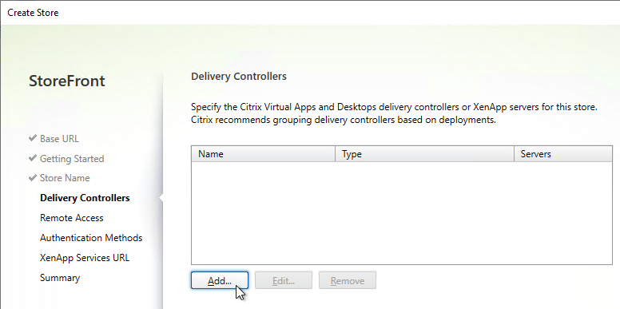
- Enter a descriptive name for the Citrix Virtual Apps and Desktops (CVAD). This name does not need to match the actual farm name.
- Add the two Delivery Controllers. Change the Transport Type to HTTP. Click OK. You can set it to HTTPS is you have valid certificates (trusted by StoreFront) installed on your Delivery Controllers.
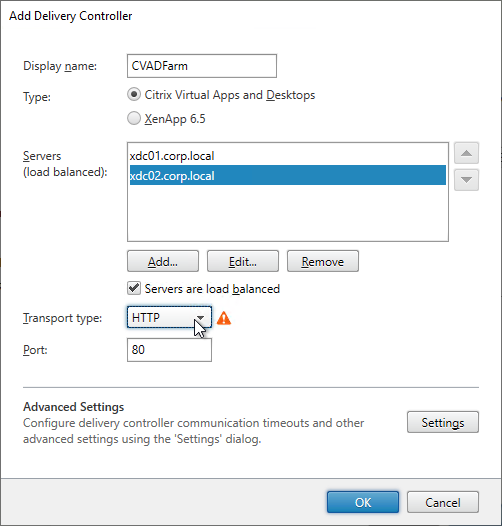
- If you have multiple Citrix Virtual Apps and Desktops sites/farms, feel free to add them now. You can also add older XenApp 6.5 farms. Click Next when done.
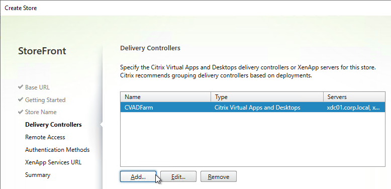
- In the Remote Access page, don’t check the box. Just click Next. You can set this up later.
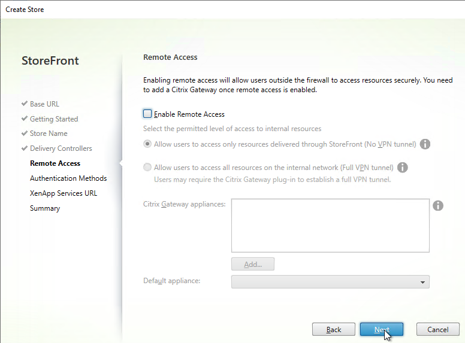
-
In the Authentication Methods page, check the boxes next to Domain pass-through and Pass-through from Citrix Gateway. Click Next.
Note: if you want Domain pass-through authentication for browser users, you also need to enable it for Receiver for Web as detailed later in this article.
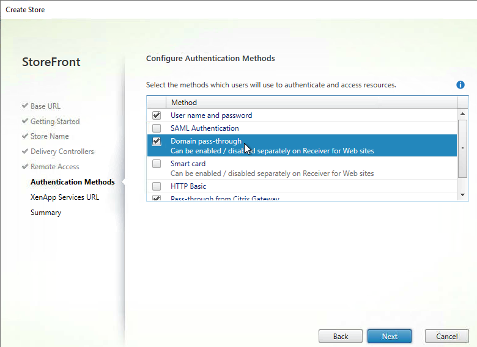
-
In the XenApp Services URL page, click Create.
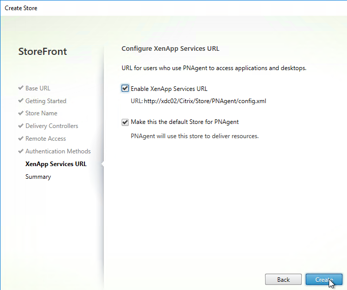
- In the Summary page, click Finish.
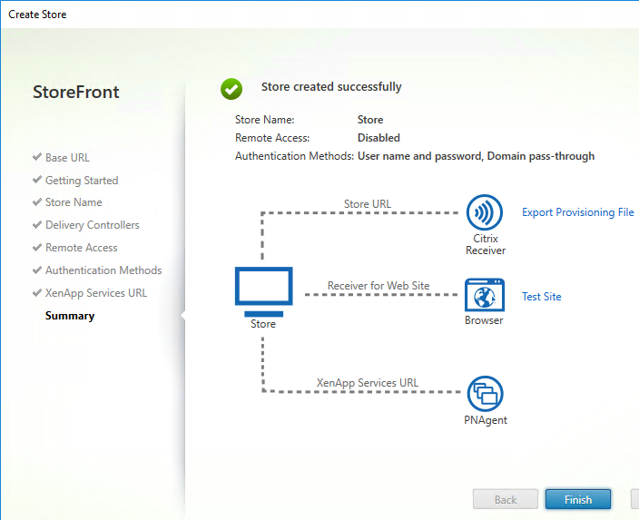
Second StoreFront Server
After the server group is created, NT SERVICE\CitrixConfigurationReplication and NT SERVICE\CitrixClusterService must remain in the Administrators group on both StoreFront servers or propagation will fail.
- Install StoreFront on the second server.
- Create/Import an SSL certificate and bind it to the Default Web Site.
- Login to the first StoreFront server. In the StoreFront management console, right-click Server Group and click Add Server.
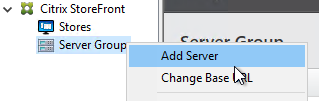
-
Copy the Authorization code.
Note: the Please wait message means it is waiting on you to add the 2nd server. You don’t actually have to wait.
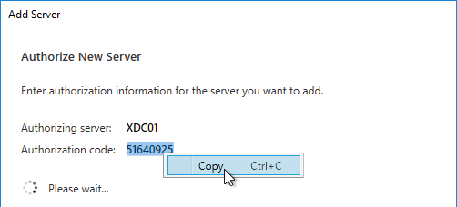
-
Login to the second StoreFront server and launch the management console. In the middle, click Join existing server group.
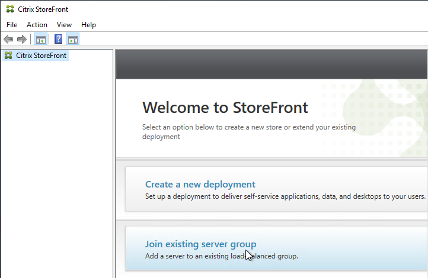
- In the Join Server Group page, enter the name of the first StoreFront server and enter the Authorization code copied earlier. Click Join.
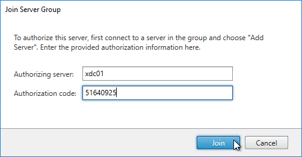
- Then click OK.
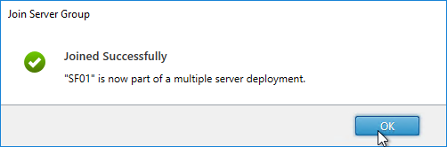
- Go back to the first server. Click OK.
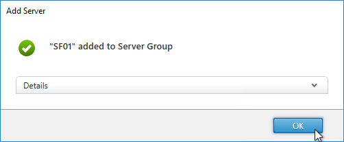
- Notice this message. It is good advice.
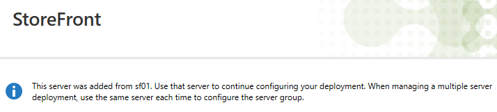
- All changes made on one StoreFront server must be manually propagated to the other StoreFront server. You do that by right-clicking Server Group, and clicking Propagate Changes.
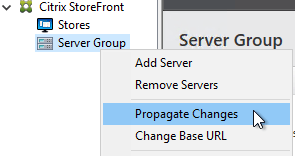
- When you propagate changes, the default web page might not be replicated to the other nodes. Copy C:\inetpub\wwwroot\web.config manually to each node.
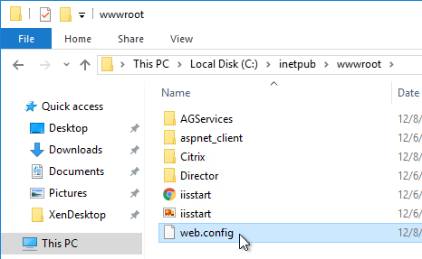
Customer Experience Improvement Program
StoreFront 3.9 and newer enable Customer Experience Improvement Program (CEIP) by default. To disable it, create the registry value HKEY_LOCAL_MACHINE\SOFTWARE\Citrix\Telemetry\CEIP\Enabled (DWORD) and set it to 0 (zero). Also see CEIP at Install, set up, upgrade, and uninstall at Citrix Docs.
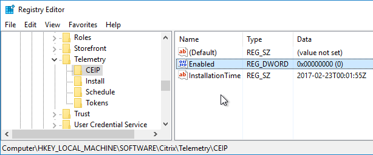
See ../delivery-controller-2203-ltsr-and-licensing/#ceip for additional places where CEIP is enabled.
Citrix Analytics
StoreFront 1906 and newer supports uploading data to Citrix Analytics.
The client devices must be running Workspace app 1903 and newer.
See Enable Analytics on Virtual Apps and Desktops on-premises at Citrix Docs.
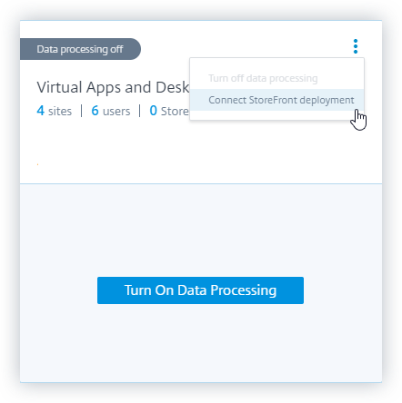
Store Name – Rename
If you installed StoreFront on your Delivery Controller, it will have a default store named Store. If you don’t like the default Store Name (/Citrix/Store) then you will need to remove the store and re-add it.
Note: Some at Citrix Discussions (A protocol error occurred while communicating with the Authentication Service) have reported authentication issues after following this procedure. It's probably cleaner to uninstall StoreFront and reinstall it.
- In the StoreFront console, on the left, click Stores.
- Right-click your store, and click Remove Store.
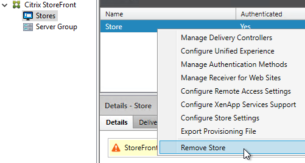
- Click Yes.
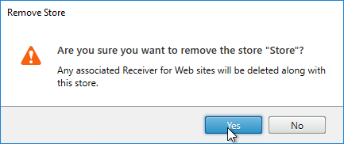
- On the left, right-click Stores, and click Create Store.
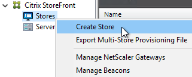
- In the Getting Started page, click Next.
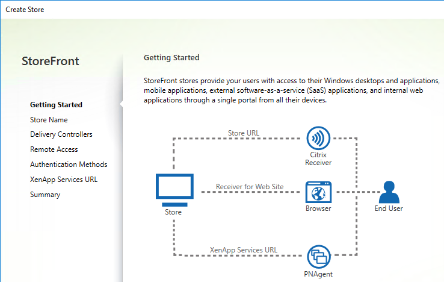
- In the Store Name page, enter a name for the store. The name entered here is part of the URL path (e.g. /Citrix/CorpStoreWeb).
- Check the box next to Set this Receiver for Web site as IIS default and click Next.
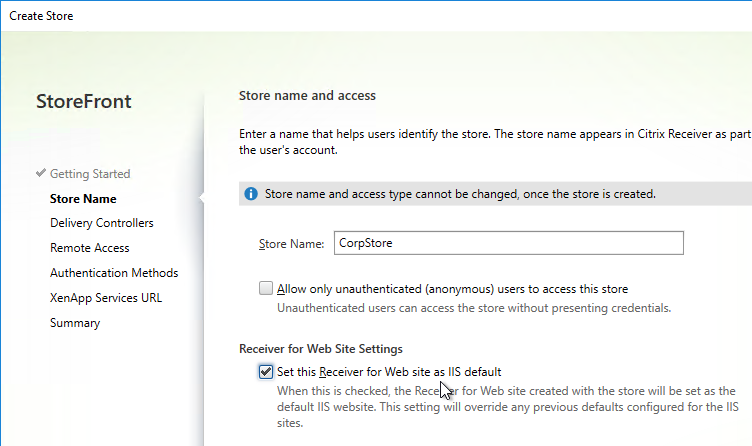
- In the Delivery Controllers page, click Add.
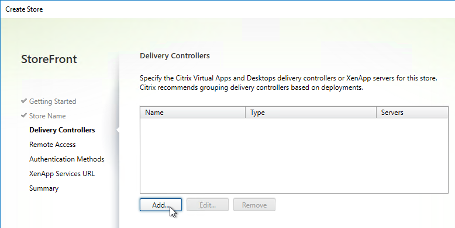
- Enter a descriptive name for the Citrix Virtual Apps and Desktops farm. This name does not need to match the actual farm name. (If StoreFront 3.5, don't put spaces or periods in the farm name)
- Change the Type to XenDesktop or Citrix Virtual Apps and Desktops.
- Add the two Delivery Controllers.
- Change the Transport Type to HTTP. Click OK. You can leave it set to HTTPS (recommended) if you have valid certificates (trusted by StoreFront) on your Delivery Controllers.
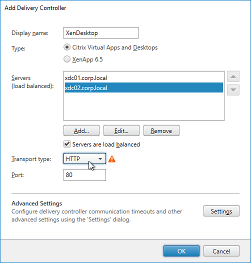
- If you have multiple Citrix Virtual Apps and Desktops farms, feel free to add them now. You can also add older XenApp farms. Or later, you can add farms in Store > Manage Delivery Controllers. Click Next when done.
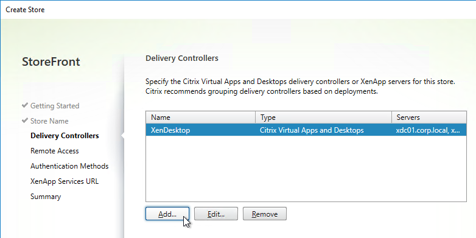
- In the Remote Access page, don’t check the box and click Next. You can set this up later.
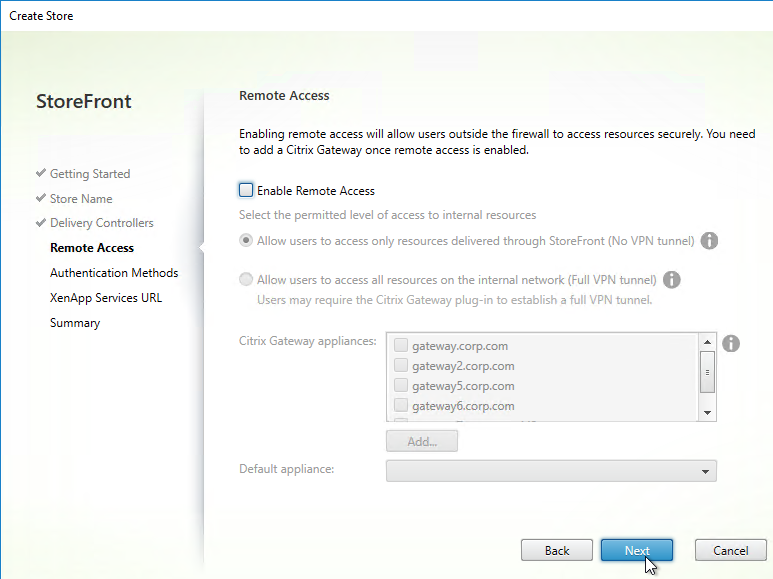
- In the Authentication Methods page, check the boxes next to Domain pass-through and Pass-through from Citrix Gateway. Click Next.
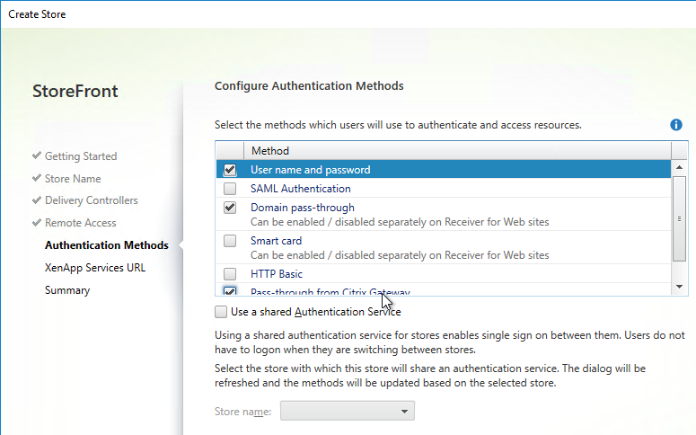
- In the XenApp Services URL page, click Create.
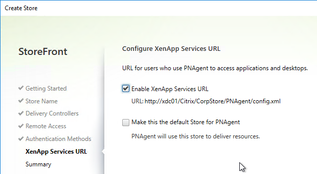
- In the Created Successfully page, click Finish.
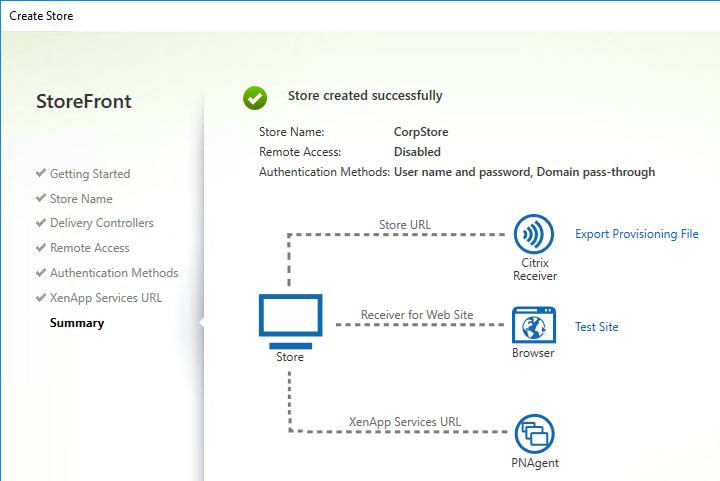
SSL Certificate
StoreFront requires SSL. You will save yourself much heartache if you install valid, trusted certificates on the StoreFront servers or your load balancer. There are two options for StoreFront SSL.
- SSL Offload: Use Citrix ADC to do SSL Offload and load balancing. In this scenario, install the SSL certificate on the load balancer. You can leave the StoreFront servers listening on HTTP and no IIS server certificate. The SSL certificate on the Citrix ADC must match the DNS name that resolves to the load balancing VIP.
- SSL End-to-end: Install an SSL certificate on each StoreFront server and bind it to IIS. This allows you to use SSL protocol between the load balancer and the StoreFront servers.
If your load balancer cannot terminate SSL, then the StoreFront IIS certificate must match the DNS name that resolves to the load balancing VIP.
For load balancers that can terminate SSL (e.g., Citrix ADC), the StoreFront IIS server certificate should match the StoreFront server name. If StoreFront is installed on the Delivery Controllers, with server-specific certificates you can later enable HTTPS in the StoreFront Store Delivery Controller configuration.
Another option is to create an SSL certificate with Subject Alternative Names for the load balanced DNS name and each of the StoreFront server FQDNs. Then import this one certificate on all StoreFront servers. Or a wildcard certificate could match all of these names.
In either case, be aware that Email-based discovery in Citrix Receiver requires the certificate to not only match the StoreFront load balanced DNS name but the certificate must also match discoverReceiver.email.suffix for every email domain. Usually, the only option to match multiple email domains is with Subject Alternative Names. If you have multiple email suffixes, then you will need multiple Subject Alternative Names, each beginning with discoverReceiver. If you don’t plan on implementing email-based discovery, then you don’t have to worry about these discoverReceiver Subject Alternative Names.
If the certificate does not match discoverReceiver.email.suffix, then users will see this message when attempting to use email discovery in Citrix Workspace app.
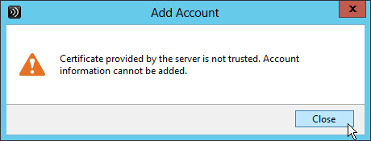
When adding Subject Alternative Names to a certificate, the first Subject Alternative Name should be the same as the Load Balancing FQDN. The remaining Subject Alternative Names should be discoverReceiver.email.suffix for every email domain.
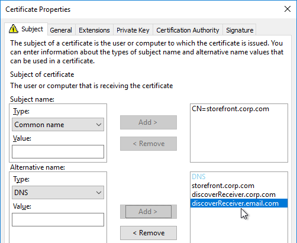
When you view a Subject Alternative Name certificate, on the Details tab, click Subject Alternative Name to verify that all names are listed including the DNS name that resolves to the load balancing VIP.
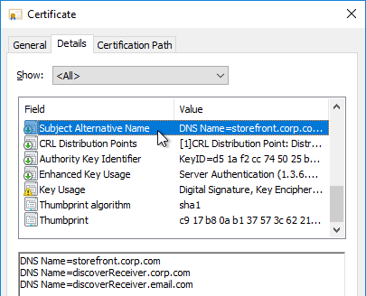
There are several methods of creating a certificate for StoreFront.
-
If you are implementing Single FQDN for internal and external users, then the certificate for external Citrix Gateway can also be used for internal StoreFront.
- Single FQDN has additional Subject Alternative Name certificate requirements, including Internal Beacon FQDN and Callback FQDN.
- If you will support non-domain-joined machines (e.g., iPads, thin clients) connecting to your internal StoreFront, then the StoreFront certificate should be signed by a public Certificate Authority. You can use IIS to request the certificate. You can then export the certificate from IIS and import it to Citrix ADC (for Load Balancing and Citrix Gateway). Public Certificate Authorities (e.g., GoDaddy, Digicert, etc.) let you enter additional Subject Alternative Names when you purchase the certificate.
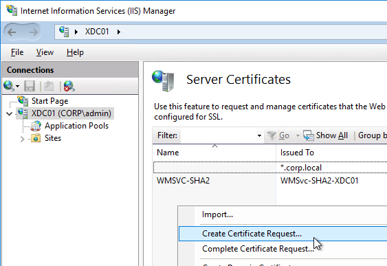
- If all internal machines are domain-joined, then you can use an internal Certificate Authority to create the StoreFront certificate. The Certificates MMC snap-in can be used to create an internal certificate signed by a Microsoft Certificate Authority. The MMC method allows you to specify Subject Alternative Names.
Once the certificate is created or imported, bind it to IIS:
- In IIS Manager, right-click the Default Web Site, and click Edit Bindings.
- Click Add.
- Change the Type to https and select the SSL certificate. Do NOT put anything in the Host name field. Click OK, and then click Close.
Delivery Controllers – SSL
Delivery Controllers can be SSL enabled by using one of two methods:
- If IIS is installed on the Delivery Controller, simply install/create a certificate, and bind it to the Default Web Site.
- If IIS is not installed on the Delivery Controller, then you need to run a command line program as described at SSL for Delivery Controller.
Once SSL certificates are installed on the Delivery Controller servers, then you can configure the StoreFront Store to use SSL when communicating with the Delivery Controllers.
- In the StoreFront Console, on the left click Stores.
- In the middle, right-click your store, and click Manage Delivery Controllers.
- Highlight the deployment and click Edit.
- The Servers list must contain FQDNs that match the certificates installed on those Delivery Controller servers.
- Change the Transport type to HTTPS.
- Click OK twice.
- See CTX399424 Gateway Callback and / or XML Communication fails after upgrade to Storefront 2203 for a workaround. The fix is included in StoreFront 2203.1.
Base URL – Change
- Configure load balancing of the StoreFront servers, including SSL certificate.
- In the Citrix StoreFront console, right-click Server Group, and click Change Base URL.
-
Enter the StoreFront Load Balancing FQDN as the new Base URL in https://storefront.corp.com format.
- Receiver requires that the Base URL is https. It won’t accept http.
- If you want the StoreFront Base URL to be the same as your Gateway FQDN, then see the Single FQDN instructions.
- Click OK.
If the Base URL is https, but you don’t have certificates installed on your StoreFront servers (aka SSL Offload), then you’ll need to do the following:
- On the left, click the Stores node.
- In the middle, right-click your store, and click Manage Receiver for Web Sites.
- Click Configure.
- On the Advanced Settings page, change Enable loopback communication to OnUsingHttp. Click OK, and then click Close.

Default Web Page
After changing the Base URL, you’ll need to update the IIS Default Website.
- On the left, right-click Stores, and click Set Default Website.
- Check the box next to Set a Receiver for Web site as the default page in IIS and click OK.
- Click Yes to overwrite.
- If you go to C:\inetpub\wwwroot and edit the file web.config, you’ll see the redirect.
Authentication Configuration
- In the Citrix StoreFront console, on the left, click the Stores node.
- In the middle, right-click your store, and click Manage Authentication Methods.
- Check the boxes next to Domain pass-through and Pass-through from Citrix Gateway.
- If you intend to enable pass-through authentication from Receiver Self-Service (native Workspace app) or from Receiver for Web (web browser), then in Web Studio (CVAD 2212 and newer), go to Settings and Enable XML trust.
- Or go to a Delivery Controller and run the command
**Set-BrokerSite -TrustRequestsSentToTheXmlServicePort $True**from a Windows PowerShell command prompt. You might have to runasnp citrix.*first.
- Or go to a Delivery Controller and run the command
-
If StoreFront is not in the same domain (or trusted domain) as the users, then you can configure StoreFront to delegate authentication to the Delivery Controllers. See XML service-based authentication at Citrix Docs.
- StoreFront 3.6 and newer can be workgroup members without joining a domain.
- Click the top gear icon, and then click Configure Trusted Domains.
- Select Trusted domains only, click Add, and enter the domain names in DNS format. The DNS suffix is needed if doing userPrincipalName authentication from Citrix Gateway.
- Select one of the domains as the default.
- If desired, check the box next to Show domains list in logon page. Click OK.
- Click the top gear icon, and then click Manage Password Options.
- Make your selection, and click OK.
- Be careful with password changes. Any time somebody changes their password through StoreFront, a profile will be created for that user on the StoreFront server. Use a tool like delprof2.exe to periodically delete these local profiles.
-
If you have Citrix Virtual Apps and Desktops and installed Self-Service Password Reset, you can integrate SSPR with StoreFront 3.7 or newer by clicking the top gear icon and clicking Configure Account Self-Service. This option is only available if your Base URL is https (encrypted). See the following for detailed implementation guides.
-
Citrix CTX217143 Self-Service Password Reset Central Store Creation Tool
- Citrix CTX224244 How Do I Deploy Self-Service Password Reset For the First Time
- George Spiers Citrix Self-Service Password Reset
- Change the selection to Citrix SSPR, and click Configure.
- Check both boxes and enter the URL of the SSPR server using the displayed example (with /MPMService on the end). Click OK three times.
- With SSPR enabled, a new Tasks tab lets users enroll with SSPR.
- The logon page also has an Account Self-Service link.
Next Generation Experience
In StoreFront 2411 and newer, you can do the following to enable the Next-gen experience theme, which looks the same as Workspace in Citrix Cloud, including the Activity Manager. 
- In the StoreFront Console, on the left, click the Stores node.
- In the middle, right-click your store, and click Manage Receiver for Web Sites.
- Click Configure.
- On the UI Experience page, select Next generation experience and click OK.

- StoreFront 2411 adds Pinned Links to the Next generation experience.


Customize Receiver Appearance
You can go to Stores > Manage Receiver for Web Sites > Configure > Customize Appearance to change logos and colors. Additional customization can be performed using the SDK.

You can also Manage Featured App Groups.
In StoreFront 1811 and newer, Featured App Groups are shown in the user interface as Collections.
- The HOME page shows the Feature App Groups in a ribbon with arrows to let the user see more Featured App Groups. The ribbon view is limited to three icons per Featured App Group. When the user clicks a Featured App Group, every icon in the Featured App Groups is shown.
- The APPS page has a Collections tab showing all collections and the number of icons in each Collection.
- When the user clicks a collection, all icons in the collection are shown. The user can click Add All on the top right to mark all of the icons as Favorites.
To create Featured App Groups:
- Go to Stores > myStore > Manage Receiver for Web Sites > Configure.
- In the Edit Receiver for Web site window, on the Featured App Groups page, click Create.
- Give the Collection a name and a description.
- At the bottom, there are three methods of adding icons to the Feature App Group.
- If you select the Keyword option, then enter a keyword that will be added to the published apps that are in this collection.
- In Citrix Studio, go to the Properties of a published application. In the Description field, at the end, enter KEYWORDS:myCollectionKeyword.

In StoreFront older than version 1811:
- Featured App Groups are displayed at the top of the Apps > All page.
- By default, Featured App Groups are displayed with continual horizontal scrolling. This is OK if you have several Featured App Groups but doesn’t look right if you only have one Featured App Group.
- Michael Bednarek has posted some code at Citrix Discussions to disable the continuous horizontal scrolling.
- If you want to display more than 3 apps per group, see Michael Bednarek at Modify Receiver for Web site at Citrix Discussions.
Receiver for Web (browser) Pass-through Authentication
- On the left, click the Stores node.
- In the middle, right-click your store, and click Manage Receiver for Web Sites.
- Click Configure.
- On the Authentication Methods page, if desired, check the box next to Domain pass-through. Click OK.

- If the StoreFront URL is in the browser’s Local Intranet zone, then you’ll see a prompt to automatically Log On. This only appears once.
- If you want to default to Pass-through without any user prompt, then see Citrix Blog Post Configuring domain pass-through as your default authentication method.
Workspace app for HTML5 2502
- On the left, click the Stores node.
- In the middle, right-click your store, and click Manage Receiver for Web Sites.
- Click Configure.
- In StoreFront 2411 and newer, on the Launch Preferences page, change the drop-down to Use Receiver for HTML5 if local Citrix Receiver/Workspace is unavailable.
- Prior to StoreFront 2411, on the Deploy Citrix Receiver / Workspace app page, change the drop-down to Use Receiver for HTML5 if local Citrix Receiver/Workspace is unavailable.

- Prior to StoreFront 2411, on the Deploy Citrix Receiver / Workspace app page, change the drop-down to Use Receiver for HTML5 if local Citrix Receiver/Workspace is unavailable.
- By default, the HTML5 session opens in a new tab. You can optionally enable Launch applications in the same tab as Receiver for Web. See Configure Citrix Receiver for HTML5 use of browser tabs at Citrix Docs for more information.
- Click OK, and then click Close.
-
Download the Workspace app 2411 for HTML5.
Note: new versions of Workspace app for HTML5 are released frequently. For example, 2306 and newer support the new launch experience.
8. Install the HTML5 Workspace app (CitrixHTML5Client-x64.exe) on one of the StoreFront servers. It installs without prompting. Repeat this step on all StoreFront servers in the Server Group since Propagate Changes doesn't seem to propagate the new Workspace App.
9. To see the installed version of HTML5 Workspace app, in StoreFront console, click the Stores node on the left. 10. In the middle pane, in the bottom half, switch to the Receiver for Web Sites tab. You might have to click Refresh to see the new version.


HTML5 Workspace app configuration
- Copy/paste of text using Ctrl+C and Ctrl+V - HTML5 Workspace app version 1907 app adds support for copy/paste of text using Ctrl+C and Ctrl+V and the feature is enabled by default. More info at Enhanced clipboard experience at Citrix Docs.
- Multi-monitor - HTML5 Workspace app has a multi-monitor feature, which is enabled by default.
- To configure HTML5 Workspace app, edit the file "C:\Program Files\Citrix\Receiver StoreFront\HTML5Client\configuration.js".
- Customer Experience Improvement Program (CEIP) is enabled by default. To disable CEIP in HTML5 Workspace App 1906 and newer, find the first analytics section and change enabled to false.
- To disable CEIP in HTML5 Workspace App 1905 and older, search for the ceip section, and change it to false.
- Customer Experience Improvement Program (CEIP) is enabled by default. To disable CEIP in HTML5 Workspace App 1906 and newer, find the first analytics section and change enabled to false.
- In the StoreFront console, on the left, right-click Server Group, and click Propagate Changes.
-
For VDA 7.15 and older, optionally, install Citrix PDF Printer on the VDAs. The PDF printer is in the Additional Components section of the HTML5 Workspace app download page.
Note: in VDA 7.16 and newer, the PDF Printer is included with the VDA installation and no longer needs to be installed separately.
Other HTML5 Receiver configurations you can change by either editing C:\Program Files\Citrix\Receiver StoreFront\HTML5Client\configuration.js, or use the Citrix Workspace app (earlier known as Citrix Receiver) for Chrome and HTML5 – Configuration Utility downloadable from CTX229141.
- HTML5 Workspace app has improved PDF printing in Chrome and Firefox. Enable it by setting supportedBrowsers to true.
- When printing from HTML5 Workspace app to the Citrix PDF Printer, the user must click Continue to show the PDF. You can get rid of this prompt. In the configuration.js file, scroll down to the line containing printDialog and set it to true.
- The new HTML5 Workspace app toolbar can be disabled or customized by editing the file C:\Program Files\Citrix\Receiver StoreFront\HTML5Client\configuration.js.
If HTML5 Workspace app is enabled, users have the option of selecting either native or HTML5 by clicking Change Citrix Receiver or Change Citrix Workspace app.
- In StoreFront 1912 and newer, click the gear icon on the top right and then click Account Settings.
- Click either Change Citrix Workspace app or Change Citrix Receiver..
- If you want to use the locally installed Workspace app, then click the blue Detect Citrix Workspace app or blue Detect Receiver button. If you want to use the HTML5 Client, click Use light version.
Citrix Blog Post Receiver for HTML5 and Chrome File Transfer Explained:
- How to use the toolbar to transfer files
- Citrix Policy settings to enable/disable file transfer
- VDA registry settings to control file transfer
- HTML5Client\Configuration.js settings for client-side configuration
- How to view HTML5Client log file
Deploy Citrix Workspace app
- Citrix recommends that all users install the Citrix Workspace Web Extension in their endpoint browsers. This extension eliminates the need for StoreFront to detect the locally installed Workspace app and enables .ica files to be downloaded to memory instead of to disk. StoreFront support for the extension is enabled by default in StoreFront 2311 and newer. See Citrix Workspace web extensions at Citrix Docs.

- StoreFront can deploy Workspace app to users that don't have Workspace app installed. In StoreFront console, on the left, click the Stores node.
- In the middle, right-click your store, and click Manage Receiver for Web Sites.
- Click Configure.
- On the Deploy Citrix Receiver/ Workspace app page, check the box next to Allow users to download HDX engine (plug in).

-
Change both source drop-downs to Local files on the StoreFront server.
-
For Windows, download one of the following:
- Workspace app for Windows 2409.10. Version 2409.10 is a Current Release.
- For LTSR, download Citrix Workspace app for Windows LTSR 2402 CU1.

- For Mac, download Workspace app 2503 for Mac.
- Click each of the Browse buttons and browse to the downloaded Workspace app.
- You can optionally enable Upgrade plug-in at logon.
- StoreFront 2411 and newer have an option to Require end users to use locally installed Citrix app only.


- Click OK when done, and Close when done.
- For Mac, download Workspace app 2503 for Mac.
- If you prefer for users to download Workspace app from the Citrix website, then note that StoreFront might default to downloading Receiver instead of Workspace app. To change it to Workspace app, do the following:
- Workspace app for Windows 2409.10. Version 2409.10 is a Current Release.
-
In StoreFront Console, in the Deploy Citrix Receiver/ Workspace app page, change Windows source and Mac source to Files on remote server (through URL).
-
Enter the following paths. The default paths might be http instead of https and you should change them to https.
-
-
When users connect to Receiver for Web, they will be prompted to install or upgrade. In StoreFront 2203 and newer, the screens say Workspace app.
- In older versions of StoreFront, the screens might say Citrix Receiver instead of Citrix Workspace app.
- You can change it to Citrix Workspace app by following the instructions at CTX221097 How to rename items on StoreFront?.
- Search the list of strings in the KB article for any string containing the word Receiver, copy the string to C:\inetpub\wwwroot\Citrix\StoreWeb\custom\strings.en.js, and change it to Workspace app. A few of the strings are shown below. Make sure there are commas between each item except the last item.
- Search the list of strings in the KB article for any string containing the word Receiver, copy the string to C:\inetpub\wwwroot\Citrix\StoreWeb\custom\strings.en.js, and change it to Workspace app. A few of the strings are shown below. Make sure there are commas between each item except the last item.
- If you don't want StoreFront to detect the locally installed Workspace app, then edit the Receiver for Web site, switch to the Advanced Settings page and uncheck the box next to Enable protocol handler. This disables the button that asks users to Detect Workspace app.


Receiver for Web Timeout
- On the left, click the Stores node.
- In the middle, right-click your store, and click Manage Receiver for Web Sites.
- Click Configure.
- On the Session Settings page, set the Session timeout as desired, and click OK.
- If you are using a Citrix ADC, you will need to change the Global Session Timeout located at Citrix Gateway => Global Settings => Change Global Settings (right pane) => Client Experience (tab) => Session Time-out (mins).
- This Citrix Gateway Session Time-out only applies to StoreFront and AAA. If you want it to also apply to ICA sessions, then on the Network Configuration tab, set ICA Session Timeout to ON. Source = CTX218008 How to configure ICA Proxy Connection Termination upon AAA Session Time Out.
- This Citrix Gateway Session Time-out only applies to StoreFront and AAA. If you want it to also apply to ICA sessions, then on the Network Configuration tab, set ICA Session Timeout to ON. Source = CTX218008 How to configure ICA Proxy Connection Termination upon AAA Session Time Out.
- From Change the session time-out of Citrix Receiver for Web at Citrix Docs: If you increase the session timeout for RfWeb to be more than 1 hour, you must also increase the maxLifetime appropriately in c:\inetpub\wwwroot\Citrix\Authentication\Web.config.
- If your desired timeout value is greater than 8 hours, you should also edit tokenLifeTime in c:\inetpub\wwwroot\Citrix\StoreWeb\web.config.
Favorites, Categories, and Default Tab
By default, when a user logs into StoreFront, the HOME tab or Favorites tab is selected. Users can go to other tabs to add icons to the list of Favorites.
In StoreFront 1811 and newer:
- Favorites are shown on the HOME tab.
- Favorites are also shown on the APPS view on the Favorites tab.
- The user can click the star icon next to a published icon to mark that published icon as a Favorite and add it to the HOME view and Favorites tab.
- On the APPS view, the user can expand the Categories drop-down and select a Category to view all icons in that Category.
- To default to the Categories view, see the custom code at CTX559036 Storefront 2302 CU2 - All Apps are now showing on initial landing page instead of categories view.
- StoreFront 1912 CU2 and newer has an option to collapse the categories after one is selected. Notice the Uncategorized folder.
- After clicking a category, the user must click Categories again to switch to a different category.
- StoreFront 1912 CU5 and StoreFront 2203 have an option to show Uncategorized icons directly below the Categories list if no Category is selected by the user.
- This feature is configured in StoreFront console > click your store > Manage Receiver for Web sites > Configure > Category Settings. 1912 CU5 and 2203 adds the checkbox option to Move uncategorized apps into an Uncategorized folder. It's checked by default, but you can uncheck it.

- Categories are configured in the Properties of the published application on the Delivery page.

- Collections are configured as Featured App Groups.
In StoreFront older than 1811:
- There's a FAVORITES view.
- On the APPS or DESKTOPS views, the user can click the Details link next to a published icon.
- Then the user can click Add to Favorites to add the icon to the FAVORITES view.
Favorites can be controlled by the administrator:
- You can completely remove the FAVORITES or HOME views by going to Stores > myStore > Configure Store Settings > User Subscriptions, and choose Disable User Subscriptions (Mandatory Store).
-
To force a published application to be favorited (subscribed), use one of the following keywords in the published application description:
- KEYWORDS: Auto = the application is automatically subscribed. But users can remove the favorite.
- KEYWORDS: Mandatory = the application is automatically subscribed, and users cannot remove the favorite.

- With Mandatory applications there is no option to remove the application from Favorites.
- Citrix Blog Post How to implement dynamic landing pages in StoreFront has code for the following: If favorites exist, go to favorites tab. If favorites do not exist, go to the store tab. :idea:
//If favorites exist, go to favorites tab. If favorites do not exist, go to the store tab. var favoritesExist = false; CTXS.Extensions.sortMyAppList = function (app_array,defaultSortFn) { //This version checks if the amount of user favorites are greater than or equal //to "favoriteThreshold". var favoriteThreshold = 1; var favoriteCount = 0; for (var i = 0; i < app_array.length; i++){ if (app_array[i].canBeRemoved()){ favoriteCount++; } } if (favoriteCount >= favoriteThreshold){ favoritesExist = true; } //This should always be called at the end defaultSortFn(); }; CTXS.Extensions.afterDisplayHomeScreen = function (callback) { if (favoritesExist == false){ CTXS.ExtensionAPI.changeView("store"); } }; -
Trentent Tye has a simple customization for C:\inetpub\wwwroot\Citrix\StoreWeb\custom\script.js to default to the APPS view if the user doesn't have any favorites. See Citrix Storefront – Adventures in customization – Default to “Store” view if you have no favourited app’s.
-
You can change the default view and view visibility by going to the Stores > myStore > Manage Receiver for Web Sites > Configure > Client Interface Settings page.
-
In StoreFront 1811 and newer, if you want to default to the APPS tab with Categories view expanded, then see CTP Sam Jacobs at Storefront 1811 - Default to Categories view at Citrix Discussions. Or see Citrix Blog Post How to land on the categories view in StoreFront 1811+.
-
Add the following to C:\Inetpub\wwwroot\Citrix\StoreWeb\custom\script.js.
Note: if you already have afterDisplayHomeScreen in your script.js file, then you'll need to merge them.
-
-
In StoreFront older than version 1811, if you change the default view to APPS, then you might also want to default to the Categories view instead of the All view.
- When publishing applications in Citrix Studio, on the Delivery page, specify an Application category so that the applications are organized into folders.

-
To default the Apps view to the Categories view instead of the All view, add the following code to the end of the file C:\Inetpub\wwwroot\Citrix\StoreWeb\custom\script.js. More details at Storefront 3.0 - change default view at Citrix Discussions.
-
Then when you login to StoreFront, you’ll see Apps > Categories as the default view. This works in Workspace app too.
- When publishing applications in Citrix Studio, on the Delivery page, specify an Application category so that the applications are organized into folders.
Beacons
- On the left, right-click Stores, and click Manage Beacons.
-
Configure an Internal Beacon. Receiver Self-Service (Workspace app native interface) tries to connect to the Internal Beacon to determine if Workspace app is currently internal or not. If the Internal Beacon is reachable then Receiver Self-Service assumes it is internal, and thus connects to the StoreFront Base URL. If the Internal Beacon is not reachable, then Receiver Self-Service assumes it is external and thus connects to Citrix Gateway. For this to work properly, the Internal Beacon must not be resolvable externally.
If you are not doing Single FQDN, then the Internal Beacon can be the StoreFront FQDN since the StoreFront FQDN is usually only available internally.
If you are doing Single FQDN, then you can’t use the StoreFront FQDN. Instead, you must use a different internal website for the beacon. If you need to support internal iPads, due to differences in how iPads determine location, the Internal Beacon should be a new FQDN that resolves to the StoreFront Load Balancing VIP, thus requiring the StoreFront certificate to match both the Internal Beacon and the Base URL. If internal iPads are not needed, then the Internal Beacon can be any internal website.
If you want to force internal Receiver Self-Service users to connect through Citrix Gateway (for AppFlow reporting), you can set the Internal Beacon to a fake URL. Since the Internal Beacon is never resolvable, Receiver Self-Service always uses Citrix Gateway. Or you can use Optimal Gateway to achieve the same goal.
-
The External beacons are used by Workspace app to determine if Workspace app has Internet access or not. You can use any reliable Internet DNS name. http://ping.citrix.com is no longer valid and should be changed to some other address. Click OK when done.
Propagate Changes
Any time you make a change on one StoreFront server, you must propagate the changes to the other StoreFront server.
- In the StoreFront console, on the left, right-click Server Group, and click Propagate Changes.
- You might see a message saying that you made changes on the wrong server.
- Click Yes when asked to propagate changes.
- Click OK when done.
- When you propagate changes, the default web page is not replicated to the other nodes. Copy C:\inetpub\wwwroot\web.config manually to each node.
Export/Import StoreFront Configuration
Use the following PowerShell cmdlets to export StoreFront Configuration into a .zip file (encryption optional) and import to a different StoreFront server group:
- Export-STFConfiguration
- Import-STFConfiguration
See Export and import the StoreFront configuration at Citrix Docs for details.
Logon Simulator
ControlUp has ScoutBees logon simulator for StoreFront and Citrix Gateway.
eG Innovations has a free Logon Simulator for Citrix XenApp and XenDesktop.